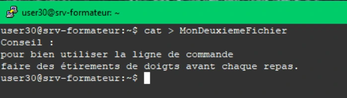
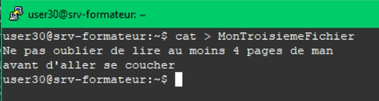
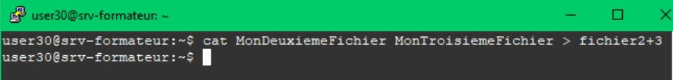
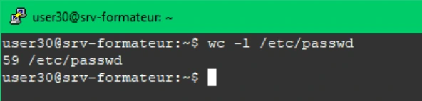
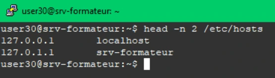

Transcription du document de formation ; texte et captures isolées sont distincts de l’aide pédagogique.
TP du Module 05 – Utiliser des fichiers sous Linux
Avant de démarrer ce TP, il convient d’avoir suivi les vidéos du module 5 et d’avoir effectué le TP précédent.
Durée estimée
45 à 60 minutes
Dans le module que vous venez de parcourir, vous trouverez les commandes nécessaires pour répondre aux questions.
Conseil :
pour bien utiliser la ligne de commande
faire des étirements de doigts avant chaque repas.
cat > MonDeuxiemeFichierConseil :pour bien utiliser la ligne de commandefaire des étirements de doigts avant chaque repas.Ne pas oublier de lire au moins 4 pages de man
avant d'aller se coucher

cat > MonTroisiemeFichierNe pas oublier de lire au moins 4 pages de manAvant d’aller se coucherCat MonDeuxiemeFichier MonTroisiemeFichier > fichier2+3wc -l /etc/passwdhead -n 2 /etc/hosts


